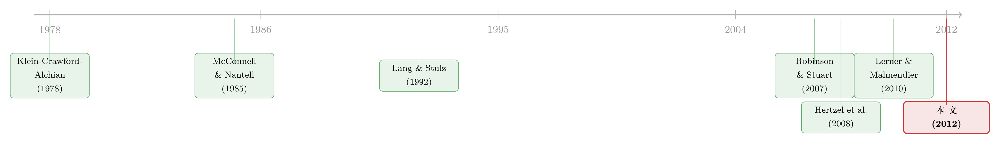

你的合伙人破产了，你会不会跟着一起垮？
本文读的是 Boone & Ivanov (2012, Journal of Financial Economics)：当战略联盟或合资企业的一方申请破产时，没破产的那一方平均会在破产公告前后吃到一段显著为负的股价反应——战略联盟伙伴的三日 CAR 约 -0.6%（折合约 2.17 亿美元市值蒸发），且关系越长、当初结盟时市场越看好的，伤得越重；而合资企业 (JV) 的伙伴几乎毫发无伤。一句话：破产的「外溢」不是均匀地砸向所有合作者，它精准地落在那些「绑得最深、最难抽身」的关系上。
1 一个被忽略的问题
先讲个常识。两家公司结成战略联盟 (strategic alliance)，或者合资设立一家合资企业 (joint venture, JV)，市场通常是鼓掌的——双方分摊成本、共享技术、互通资源，结盟公告日往往伴随一段正的超额收益。这一点，从 McConnell and Nantell (1985) 到 Chan, Kensinger, Keown, and Martin (1997)，文献已经讲了几十年。
但合作有开始，就有结束。合同里总写着各种「散伙条款」：到了约定年限散，达成目标散，控制权变更散，违约也散。Robinson and Stuart (2007) 仔细读过这些条款，发现它们常常是故意写得含混的——含混留出了事后打官司的空间，反而让双方都不敢乱来，从而把整段关系的剩余价值做大。
那么问题来了：如果你的合伙人不是「正常退出」，而是直接申请破产了呢？
这件事此前几乎没人系统地量过。直觉上有两种截然相反的可能，而且都说得通：
- 一种是坏事。合伙人破产，意味着那些本该源源不断流过来的协同收益（synergy）戛然而止，甚至连你自己的运营和增长都被拖累。
- 另一种却可能是好事。合伙人已经是个「弱者」了，破产恰恰给了你一个体面抽身的借口——把投在这段关系里的资源抽回来，投到回报更高的地方去，还不必背上「无故毁约」的坏名声。
到底是哪一种？Boone 和 Ivanov 说：这是一个纯粹的经验问题（empirical question）。于是他们去数据里找答案。
2 法律先埋下的伏笔
在看结果之前，有必要先理解一件事：为什么合伙人破产，会「合法地」伤到你。
美国破产法在这里埋了两颗钉子。第一颗是 Section 362 的自动冻结（automatic stay）：破产一旦申请，所有债权人——包括联盟伙伴——都被禁止再去收款。于是你为合作提供了服务、本该收到的那笔钱，如果不被破产法官认定为「正常经营」的一部分，就可能收不回来。
第二颗更狠，是 Section 365：破产方有权在一段时间内，自行选择接受或拒绝现有的合同。也就是说，哪怕破产公司最后从 Chapter 11 里活了过来，你们那份协议也可能早在重整过程中被它单方面撕掉、或被折腾得面目全非。
唯一的例外是 Section 365(n)：在知识产权许可协议里，只要被许可方继续付特许权使用费，就能保住对该知识产权的使用权。这是为数不多对非破产方的「保护伞」——后文会看到，这种结构性差异正是 JV 与战略联盟命运不同的根源。
换句话说，合伙人破产对你不是「与我无关的别人家的事」。法律的设计，让破产方握着「撕约」的主动权，而你只能被动承受。这就是「外溢效应（spillover effect）」的制度土壤。
3 怎么数：把三个时点对齐
识别策略其实很经典，是一个事件研究（event study）。作者要量的是「非破产方」围绕三个关键时点的财富变化：
- 当初两家结盟的公告日；
- 合伙人申请破产的公告日；
- 破产前的财务困境（distress）日。
对每个时点，他们用 Brown and Warner (1985) 的市场调整模型算累计超额收益 (cumulative abnormal returns, CAR)，以 CRSP 的市值加权市场收益为基准，估计窗口取相对公告日的 -46 到 -226 天。事件窗口则用窄的三日 (-1,+1) 和稍宽的五日 (-2,+2)。
数据来自 SDC Platinum 的联盟/合资数据库，与 SDC Platinum 破产数据库匹配，样本期 1989–2007，要求所有参与方都是 CRSP 里有数据的上市公司。最后落到：130 家破产公司，在破产时持有 366 段合作关系（其中 282 段是战略联盟，84 段是合资企业）；对应 288 家唯一的非破产伙伴、427 个「伙伴破产」观测。破产案件高度集中在 2001–2003——也就是互联网泡沫破灭之后那几年。
这里有个聪明的小设计值得留意。首先，作者去看了结盟当初的公告收益：全样本三日 CAR 是 1.03%（t = 3.27），联盟 0.98%，JV 1.15%，都显著为正，和文献一致。接着，一个自然的问题是：这些「最终会有一方破产」的联盟，当初结盟时市场看好吗？答案微妙——把它们和同期「不限定结局」的一般联盟样本比，发现这些日后出事的战略联盟，当初的结盟收益平均要低 30% 左右。市场似乎隐隐嗅到了什么。而其中长期联盟（最终存续超过样本中位数 4 年的）结盟收益最低，只有 0.54%（t = 0.91，根本不显著）。
这个「结盟时就已经被市场打了折」的细节，是后面整篇文章的暗线：市场对这类关系的预期，从一开始就更悲观。
4 反转：不是所有人都受伤
然后，主菜上桌。合伙人破产那一刻，非破产方的股价怎么反应？
全样本看，是负的，但只是勉强显著——三日窗口边缘显著，五日窗口就不显著了。如果故事到此为止，那这篇文章大概率发不了 JFE：整体上「有那么点负，但不强」。
但真正关键的一步，是把样本按组织形式劈开。
一旦区分战略联盟和合资企业，画面立刻清晰：
- 战略联盟伙伴，三日
CAR = -0.6%，在5%水平上显著。用破产前一个月这些非破产公司的平均市值折算，这0.6%对应约2.17亿美元的市值损失，经济意义不小。 - 合资企业伙伴，破产公告前后的
CAR不显著。
这就是全文的「一个核心」：破产的外溢效应，几乎全部集中在战略联盟，而合资企业像是一层防火墙。
为什么？回到第 2 节的法律逻辑。战略联盟更「流动」、目标更模糊，往往直接缠绕着双方的核心业务——一旦一方破产，撕约、自动冻结，伤的就是你的主业。而合资企业是另设一个独立法人，资产是单独注入的，边界清楚，能把双方各自留存的资产隔离开来。结构决定了风险敞口。
更有意思的是作者的进一步推断：既然 JV 更「隔离」，那么当事方在一开始选择组织形式时，可能就已经把这一层考虑算进去了——项目类型和结盟时的公司特征，会影响他们到底选联盟还是选 JV。也就是说，组织形式本身是内生的选择，而非外生地决定命运。
5 谁伤得最重：把异质性榨干
确认了「联盟受伤、JV 没事」之后，作者继续追问：在联盟内部，谁伤得最重？
第一刀，按关系时长切。 长期联盟（存续 > 中位数 4 年）的负反应明显强于短期联盟。直觉很顺：关系越长，说明双方越觉得这段合作有价值，Robinson and Stuart (2007) 也指出越长的项目越容易撞上没料到的意外——所以一旦合伙人破产，损失的协同价值也越大。
第二刀，按结盟时的收益切。 当初结盟公告收益越高的，破产时跌得越狠。这同样自洽：市场当年越看好这段关系，意味着它内含的预期收益越高，破产把这份收益抹掉时，痛感也越强。
第三刀，按产业环境切。 处在横向（horizontal）关系、且对方所在行业正在衰退的非破产方，收益最差；反过来，如果对方来自一个表现更好的行业，则相对好过些。这条很关键——它说明外溢效应会被企业自身的处境放大：当你自己的行业前景也不妙、又很难找到替代伙伴时，合伙人破产就是雪上加霜。
第四刀，看股权与董事会。 当非破产方在破产方那里持有股权、或派驻了董事时，负的财富效应显著更大——绑得越深，越跑不掉。
把这些放在一起，主旋律始终如一：伤害正比于「关系的价值」与「抽身的难度」。（关于「公司之间的经济联系如何把一家的冲击传导到另一家股价上」，可参见《评级一起动，股价却慢半拍——藏在债券市场里的「经济联系」》与《互补品的暗线：当电池涨价，芯片厂的股票为什么会先动？》。）
6 不只是股价：两年后的「内伤」
股价是市场的预期，那真实的经营呢？作者接着看破产之后两年里，非破产方的运营表现。
结论是：利润率和投资水平都出现下滑，而且——一如既往——最差的表现集中在长期联盟伙伴身上。这说明那段负的 CAR 不是市场一时的过度反应，而是确有其实的「内伤」：合作中断真的拖累了对方的盈利能力和扩张步伐。
但有一个反直觉的发现值得强调：尽管利润率和投资双双下滑，这些非破产的长期联盟伙伴，其自身的破产概率并没有显著上升。也就是说，外溢效应足以让你「掉一层皮」，却还不至于把你也拖进破产。伤筋动骨，但不致命。
7 市场是不是早就知道了？
聪明的读者这时会追问：合伙人破产往往是「长期滑向困境」的终点，市场会不会在破产正式公告之前，就把坏消息提前消化了？如果是，那破产公告日的那点负收益就不算「新信息」了。
作者专门查了破产前的困境日，结论是：没有。负的股价效应主要集中在破产公告日当天，破产前并没有被充分预期到。这一点让整个故事更干净——市场确实是在破产公告这一刻，才重新给非破产方的协同收益「记账」。
8 文献脉络
把这篇论文放进它所在的研究长河里，脉络是清楚的。
最早一支，是讲战略联盟与合资企业「好处」的文献：从 Berg and Friedman (1981)、Hennart (1988)、Kogut (1988) 论证资源共享与风险分散的价值，到 McConnell and Nantell (1985)、Chan, Kensinger, Keown, and Martin (1997) 用事件研究证明结盟公告带来正收益。Robinson (2008) 进一步把联盟理解为「企业边界」的延伸。
接着，一条理论暗线来自不完全合约（incomplete contracting）文献——Klein, Crawford, and Alchian (1978)、Grossman and Hart (1986)、Hart (1988, 2001)、Aghion and Tirole (1994)——它们说明，股权与控制权的安排能缓解联盟双方的「敲竹杠（hold-up）」问题。Mathews (2006) 和 Lerner and Malmendier (2010) 则把镜头对准了合约本身：股权如何威慑进入、终止权如何被设计。

另一条平行的支流，是「财务困境的传染（contagion）」：Lang and Stulz (1992) 发现破产公告会通过竞争与同业关系外溢，Hertzel, Li, Officer, and Rogers (2008) 把这种困境的外溢沿着供应链——客户与供应商——量了出来。
这篇 Boone and Ivanov (2012) 的位置就在这两条支流的交汇处：它把「困境传染」从竞争对手、上下游，推进到了「自愿缔结的合作关系」——战略联盟与合资企业，并且第一次系统地指出，外溢的强弱取决于组织形式与关系特征。这是它最干净的边际贡献。
9 评论与延伸（Q&A + 研究方向）
(a) 几个可能的疑问
Q：战略联盟和合资企业，到底差在哪，为什么命运如此不同？
关键在「法人边界」。战略联盟是两家独立公司为共同目标而合作，资源和核心业务直接交织，没有独立的资产隔离；而 JV 另设一个独立法人，资产单独注入、边界清楚。破产法的自动冻结和「撕约权」打击的是与破产方直接缠绕的合约，所以联盟的核心业务首当其冲，JV 的母公司资产则被那层法人外壳保护着。
Q：那个 -0.6% 看起来很小，凭什么说它重要？
单看百分比确实不大，但折算成市值是约
2.17亿美元的损失，经济意义不小；更重要的是它在统计上稳健（5% 显著），并且能被一系列横截面特征（关系时长、结盟收益、行业衰退、股权/董事）系统性地解释——一个能被机制「预测」的小系数，比一个孤零零的大系数更可信。
Q：会不会是反向因果——本来就要垮的公司，才更容易摊上一个破产的伙伴？
这是事件研究天然要面对的担忧。作者的两个设计部分缓解了它：一是检验破产前的「困境日」，发现负效应并未在破产前提前出现，说明驱动力是破产公告这个事件本身；二是控制了结盟时点的特征。但严格说，组织形式与关系时长都是内生选择，作者自己也承认这一点——这是识别上的软肋。
Q：组织形式是内生的，这会不会让「JV 更安全」的结论站不住？
会削弱因果解读，但不至于推翻描述性结论。作者明确指出，项目类型和结盟时的公司特征会影响选联盟还是选 JV，所以「JV 伙伴受伤更小」既可能是 JV 结构本身的隔离作用，也可能是「本就风险低的合作才会被装进 JV」。两种解释并存，文章诚实地把它留作开放问题。
Q：利润率和投资都跌了，破产概率却没上升，这不矛盾吗？
不矛盾。外溢效应足以削弱盈利能力和扩张意愿（「掉一层皮」），但这些非破产伙伴本身通常财务尚可，协同收益的中断不足以把它们推到资不抵债的边缘。这恰恰刻画了外溢的「剂量」：伤身，未必致命。
Q：和供应链上的困境传染（Hertzel et al., 2008）比，这篇的新意在哪？
供应链传染走的是「交易关系」——你是我的客户或供应商，你出事我跟着出事。这篇走的是「自愿缔结的合作关系」，且关系是有合约、有终止权、有组织形式选择的。它的独到之处在于揭示了合约结构（联盟 vs JV）如何调节外溢的强弱，这是纯交易关系里没有的维度。
(b) 几个可能的研究问题与提案
1. 破产外溢在公司债/信用市场的镜像。
【经济故事】股价跌 0.6%，那非破产伙伴的债券利差会不会同步走阔？如果协同收益中断真的损伤了未来现金流，信用市场理应同样定价——而且债券对「下行风险」更敏感，效应可能比股票更强。
【可行性】中。需要把 SDC 联盟样本匹配到 TRACE 债券交易与利差数据，样本会因「非破产方需有公开债」而大幅缩水，但识别策略可直接平移本文的事件研究框架，doable。
2. 外资伙伴是否提供了额外的「隔离」或「放大」？ 【经济故事】当破产方或非破产方是跨国合作中的外国主体时，跨境破产法的适用、汇率与信息摩擦，可能让外溢效应被放大或被隔离。外资持有人在危机中的「逃跑」倾向是否会叠加到联盟破产的冲击上？ 【可行性】中偏低。需要跨国联盟样本与跨境破产事件，数据可得性是主要瓶颈；但若限定在少数法律环境清晰的国家对，识别可行。
3. 联盟破产外溢与「流动性」的交互。 【经济故事】本文发现「行业衰退 + 难找替代伙伴」会放大外溢。一个自然推论是：当非破产方自身融资约束更紧、资产更不流动时，它既难抽身、又难补位，外溢应更严重。 【可行性】高。融资约束代理变量（KZ、WW 指数）与资产流动性指标都现成，直接在本文样本上做交互项回归即可，识别担忧也与本文一致。
4. 终止条款的文本，能否预测外溢的大小？
【经济故事】Robinson and Stuart (2007) 强调终止条款常被故意写得含混。如果能从合约文本里读出「破产相关条款」的明确程度，就能直接检验：写得越清楚（如 IMedicor 案例那样明文规定破产即终止分成）的关系，外溢是更小（已被预期、提前定价）还是更大（确认了坏结局）？
【可行性】中。需要合约全文（SEC 备案中的 material agreements）与文本分析，样本构建工作量大，但机制清晰、有现成的法律理论支撑。
10 我的判断
这篇文章最漂亮的地方，是它在一个「整体效应很弱」的样本里，靠一个干净的二分（联盟 vs JV）把信号从噪声里拎了出来，并且用一连串自洽的横截面切割（时长、结盟收益、行业衰退、股权/董事）把机制讲到了「可预测」的程度。它把困境传染文献从竞争者、上下游，扎扎实实地推进到了自愿合作关系，这个边际贡献是实打实的。
但要诚实地说，识别上的软肋也很明显：组织形式、关系时长、股权安排，全都是当事方的内生选择。「JV 更安全」很可能一半是结构隔离、一半是「低风险的合作才被装进 JV」。作者对此是坦白的，但文章并没有一个外生的工具或自然实验来彻底切开这一层——这在 2012 年的 JFE 是可以接受的，放在今天大概会被要求做得更狠。
我接下来最想看到的，是把这套外溢逻辑搬到信用市场：股价跌了 0.6%，债券利差动没动？以及，当非破产方自身流动性紧张、抽身困难时，外溢是否会被放大到威胁其自身的再融资。如果那条暗线成立，「合伙人破产」就不只是一次性的财富冲击，而可能是一条会自我强化的信用螺旋。
参考文献
- Berg, S., Friedman, P. (1981). Impacts of domestic joint ventures on industrial rates of return: a pooled cross-section analysis: 1964–1975. Review of Economics and Statistics 63, 293–298.
- Boone, A. L., Ivanov, V. I. (2012). Bankruptcy spillover effects on strategic alliance partners. Journal of Financial Economics 103(3), 551–569.
- Brown, S., Warner, J. (1985). Using daily stock returns: the case of event studies. Journal of Financial Economics 14, 3–31.
- Chan, S. H., Kensinger, J., Keown, A., Martin, J. (1997). Do strategic alliances create value? Journal of Financial Economics 46, 199–221.
- Hennart, J. F. (1988). A transaction cost theory of equity joint ventures. Strategic Management Journal 9, 361–374.
- Hertzel, M., Li, Z., Officer, M., Rogers, K. (2008). Inter-firm linkages and the wealth effects of financial distress along the supply chain. Journal of Financial Economics 87, 374–387.
- Klein, B., Crawford, R., Alchian, A. (1978). Vertical integration, appropriable rents, and the competitive contracting process. Journal of Law and Economics 21, 297–326.
- Kogut, B. (1988). Joint ventures: theoretical and empirical perspectives. Strategic Management Journal 9, 319–332.
- Lang, L., Stulz, R. (1992). Contagion and competitive intra-industry effects of bankruptcy announcements. Journal of Financial Economics 32, 45–60.
- Lerner, J., Malmendier, U. (2010). Contractibility and the design of research agreements. American Economic Review 100, 214–246.
- Mathews, R. (2006). Strategic alliances, equity stakes, and entry deterrence. Journal of Financial Economics 80, 35–79.
- McConnell, J., Nantell, T. (1985). Corporate combinations and common stock returns: the case of joint ventures. Journal of Finance 40, 519–536.
- Robinson, D. (2008). Strategic alliances and the boundaries of the firm. Review of Financial Studies 21, 649–681.
- Robinson, D., Stuart, T. (2007). Financial contracting in biotech strategic alliances. Journal of Law and Economics 50, 559–595.